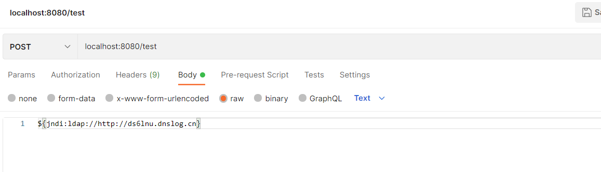

Log4j2重大漏洞
乍一听到Log4j2有重大漏洞，看了网上很多报道，一头雾水：
- 这个是什么bug，到底是怎么个原理？
- 听说影响很大，到底有什么影响？
- 怎么确认自己的程序有没有受影响？
- 如何解决这个漏洞？
漏洞原理及详情
- 攻击者可利用此漏洞构造特殊的数据请求包，最终触发远程代码执行。
- 漏洞原理官方表述是：Apache Log4j2 中存在JNDI注入漏洞，当程序将用户输入的数据进行日志记录时，即可触发此漏洞，未经授权的攻击者利用该漏洞，在目标服务器上执行任意代码，触发Log4j2组件解析缺陷，实现目标服务器的任意代码执行，获得目标服务器权限。
- 通俗简单的说就是：在打印日志的时候，如果你的日志内容中包含关键词 ${，攻击者就能将关键字所包含的内容当作变量来替换成任何攻击命令，并且执行。
- 由于 Apache Log4j2 的某些函数具有递归分析函数，因此攻击者可以直接构造恶意请求来触发远程代码执行漏洞。
影响
- 能窃取私密信息，譬如用户名密码
确认是否被影响到
初步
- 我用的是idea，全局搜索Log4j关键字，逐步追踪到引用处
- pom文件或者gradle是否添加过log4j的依赖，并关注版本号
如何证实漏洞
- 通过流量监测设备监控是否有相关 DNSLog 域名的请求
- 通过监测相关日志中是否存在“jndi:ldap://”、“jndi:rmi”等字符来发现可能的攻击行为。
DNSLog是干嘛的
- DNSLog可以为你免费分配一个二级域名，并记录这个二级域名做DNS解析过程中的域名和IP映射关系的请求记录。当你对这个二级域名进行请求时，自然会进行DNS解析，所以你就会在当前的页面查看到解析的记录。
重现漏洞操作步骤
新建一个Spring Boot的Web项目，配置对应版本的log4j2，搭了好久，maven官方已经下不到log4j2的jar包了，总之只要是之前有问题jar包的项目就行
只要在项目里打印过入参的情况即可重现问题
postman进行调用
回到DNSLog页面上刷新一下DNS解析记录，可以看到，攻击生效
如何解决
临时方案
- 修改log4j2配置：log4j2.formatMsgNolookups=True
- 修改JVM参数 -Dlog4j2.formatMsgNoLookups=true
- 测试可行
彻底解决
- log4j升级到2.15.0版本及以上
平替方案
- springboot默认用的就是logback，我们自己项目用的就是logback，功能方面也是完全满足，其实这次大事件并未牵涉到我们，但是一开始因为不了解并没确定，然后出于学习的目的就写了这篇博客，以供大家参考。